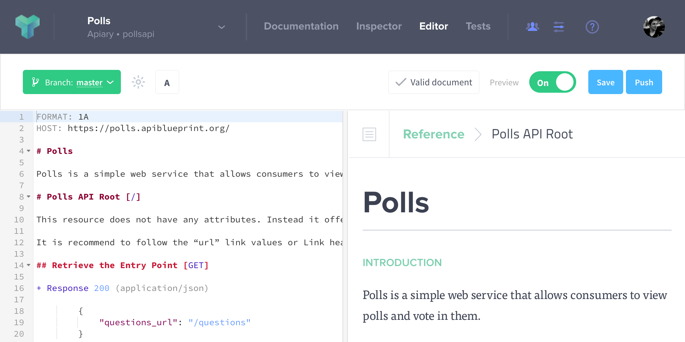
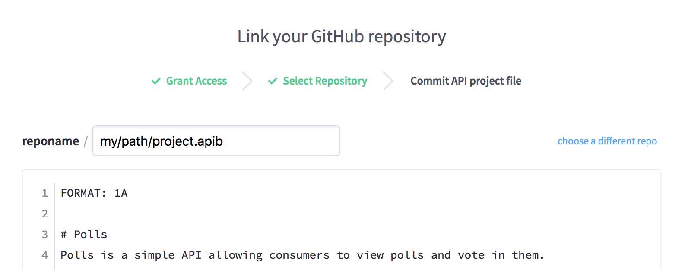

GitHub Integration
The GitHub Integration feature allows you to create branches and utilize workflows like GitHub Flow for managing your API design process.
This feature is available with Apiary Pro. With Free and Standard plans you can sync default branch with GitHub.
In case you prefer pictures rather than words check our video tutorial.

Creating Branches
After syncing your API with GitHub, you will see a new button on the editor labeled “New Branch”. When clicked, this button will do the following:
- Ask you what you would like to name your branch
- Create that branch on GitHub
- Create a local branch API on Apiary
After this is complete, Apiary will now be pushing to and pulling from that specific branch in your synced repository.
Additionally, you may branch from other branches, not just the default branch. This allows you to set up a branch hierarchy of your choice that suits your team’s workflow. Simply click the “New Branch” button on any branch to use this.
When connecting your API project to GitHub, Apiary will fetch the default branch. If you need Apiary to derive your future branches from another branch, you can change the default branch in GitHub (see the GitHub documentation). If you change the default branch, you’ll need to disconnect and reconnect your API project in Apiary for the change to propagate.
Switching Between Branches
You will see a branch API selector on the editor screen that allows you to quickly switch between existing branches in Apiary.
Apiary does not fetch the remote branches, the list only contains the branches created in Apiary. If a branch that was created in Apiary is deleted on GitHub, it will be recreated once you push your changes from Apiary.
Saving Locally
Apiary will only push commits to GitHub when you are ready to do so. Until you are, you can click the “Save” button on the editor, which will save your API Project on Apiary only. The “Save” button stores your changes for the branch only, leaving all other branches in Apiary unchanged.
Pushing to GitHub
Once you are ready to make changes on GitHub, you can click the “Push” button on the editor. This will do the following:
- It will save your API Project if you have not done so already
- It will prompt you to enter a commit message
- Once entered and submitted, it will push that change to the branch
You can change your email Apiary uses for commits on the user settings page.
We have a dedicated section on troubleshooting GitHub Sync.
Pulling from GitHub
Apiary will listen to only the branches that you have set up in Apiary, and not all branches in a repo. When a change is made on a branch API that is in Apiary, that change will be pulled down.
It is important to note that if a change is made on GitHub that results in an invalid API Description file, those changes will not be pulled down to Apiary. If a change cannot be pulled to Apiary due to the API Description file being invalid, a comment will be added to the commit in GitHub.
Apiary listens for any change to a branch, including a merge from another branch.
Opening Pull Request
Once you are ready to merge your changes to another branch, you can click the “Pull Request” button. This will take you directly to GitHub, where you will use their normal pull request form for opening a new request.
Deleting a branch
We are not synchronizing the state of branches in GitHub, so if you delete a branch in your GitHub repository, we don’t delete your branch in Apiary. If you want to delete a branch in Apiary, switch to the branch from the editor, go to the API Project settings for that branch and delete your branch from there.
If you delete branch in GitHub, and then try to push to it from Apiary, it will be recreated in GitHub.
Choosing a file path
With GitHub Integration, you can change file path while syncing the repository with Apiary. You may specify a path with a slash (/) to denote a file should be saved into a folder. This custom filename will be used for pushing a pulling.

If you delete or rename the file, we have no way of detecting that. If you want to change the file path, you need to disconnect the sync and connect it again with correct path.
User permissions
If you add a viewer or an editor to an API Project using branches, they will get access to all branches. In the same way, if you remove user from one branch, user would lose access to all current and future branches.